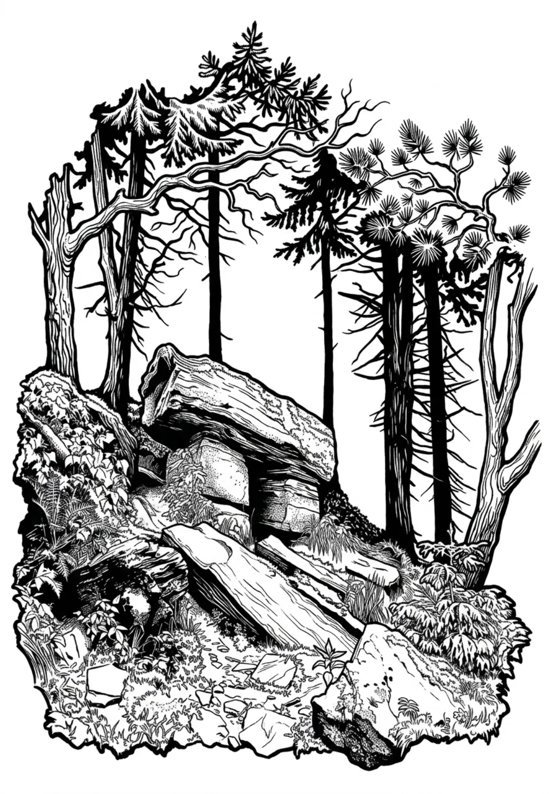

Čertův mlýn
Čertův mlýn (německy Teufelsmühle) je pátá (po Lysé hoře, Smrku, Kněhyni a Malchoru) nejvyšší hora Moravskoslezských Beskyd, nacházející se 2,5 km východně od Pusteven. Vrchol hory je nejvyšším bodem okresu Vsetín a celého Zlínského kraje. Zalesněno smrkovým lesem, bez výhledů.
Více na Wikipedii